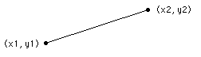

| Draw.DashedLine | Part of Draw module |
| Syntax | Draw.DashedLine (x1, y1, x2, y2, lineStyle, Color : int)
|
| Description | The Draw.DashedLine procedure is used to draw a dotted or dashed line on the screen from (x1, y1) to (x2, y2) using the specified Color. There are five possible line styles: drawSolid Draws a solid line (same as Draw.Line) drawDash Draws a dashed line drawDot Draws a dotted line drawDashDot Draws a line that alternates dashes and dots drawDashDotDot Draws a line that alternates dash and dot-dot  |
| Example | This program draws a large X, reaching to each corner of the screen in two different colors. The maxx and maxy functions are used to determine the maximum x and y values on the screen. The point (0,0) is the left bottom of the screen, (maxx, maxy) is the right top, etc.
View.Set ("graphics")
% Draw a line in each of the styles.
Draw.DashedLine (0, 50, maxx, 50, drawSolid, brightred)
Draw.DashedLine (0, 100, maxx, 100, drawDash, brightred)
Draw.DashedLine (0, 150, maxx, 150, drawDot, brightred)
Draw.DashedLine (0, 200, maxx, 200, drawDashDot, brightred)
Draw.DashedLine (0, 250, maxx, 250, drawDashDotDot, brightred)
|
| Execute | |
| Details | The screen must be in a "graphics" mode. See the View.Set procedure for details. If the screen is not in a "graphics" mode, an error will occur.
|
| Status | Exported qualified. This means that you can only call the function by calling Draw.DashedLine, not by calling DashedLine.
|
| See also | View.Set, maxx, maxy and the various procedures in the Draw unit.
|